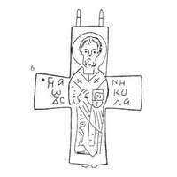

Catalog › CE-0249 · KOR2003-I.2.8
Valvă de revers de encolpion cu Sf. Nicolae în veșmânt arhieresc, inscripție slavonă pe trei rânduri
sec. XII (?) (1101–1200) · ținutul Kaniv, gubernia Kiev, Ucraina · Muzeul Național de Istorie al Ucrainei, Kiev, inv. В-4554/165 (14024)
single valve of a reliquary cross, aramă; c. XII (?) (1101–1200); find spot unknown; kept at Muzeul Național de Istorie al Ucrainei, Kiev.


Identificare
- Categorie
- Valvă izolată
- Material
- Aramă
- Tehnică
- Turnare în relief; Gravare (incizie)
- Dimensiuni
- Î 70 × L 53 × Gr 5 mm
Iconografie
- Revers
- Sf. Nicolae
- Descriere revers
- Valvă de revers de encolpion cu capete drepte, ușor lărgite (ambele balamale de jos rupte). Imaginea figurii sfântului în picioare și inscripțiile sunt executate cu linii adâncite. Figura Sf. Nicolae, conform inscripției, cu Evanghelia în mâna stângă, în veșmânt arhieresc, cu trunchiul puțin rotunjit, ocupă tot planul vertical al valvei. Inscripții pe trei rânduri, la stânga și la dreapta imaginii sfântului: О ГНАЛѠЂС NН/КО/ЛА.
- Inscripții
- О ГНАЛѠЂС NН/КО/ЛА
- Limba
- Slavonă
Datare și atribuire
- Datare
- sec. XII (?) (1101–1200)
- Centru
- Necunoscut
- Tipologie
- Korzukhina–Peskova 2003, tip I 2
Descoperire
- Regiune
- ținutul Kaniv, gubernia Kiev
- Țară
- Ucraina
- Context
- Descoperire izolată
Păstrare și referințe
- Colecție
- Muzeul Național de Istorie al Ucrainei, Kiev
- Nr. inventar
- В-4554/165 (14024)
- Bibliografie
- G. F. Korzukhina, A. A. Peskova, Древнерусские энколпионы. Нагрудные кресты-реликварии XI–XIII вв., Sankt-Petersburg, 2003 [Korzukhina–Peskova 2003], p. 54, cat. nr. I 2/8, reprodusă la Табл. 15 (planșe, p. 257). Bibliografie citată în sursă: Ханенко 1899, табл. X, № 117; Корзухина, архив ф. 77, д. 15, л. 5.
- Figura
- Табл. 15
- Planșe
- Korzukhina–Peskova 2003, Табл. 15 (planșă fără paginație proprie în PDF; p. 257 tipărită)
- Observații
- Datare după Peskova: sec. XII (?). Circumstanțe: Descoperire de la sfârșitul sec. XIX. Proveniență în colecție: din colecția B. I. și V. N. Khanenko. Lectura inscripției de verificat pe original. Valvă analogă provenită de la Sudak se păstrează în Muzeul Arheologic din Odesa (ZOOID 1873, 3; Тимашкова 1991, 122, рис. 2, 5; Корзухина, архив ф. 77, д. 15, л. 3). Coordonate: nu sunt date în sursă.
Citare: Corpus Encolpiorum, CE-0249, Valvă de revers de encolpion cu Sf. Nicolae în veșmânt arhieresc, inscripție slavonă pe trei rânduri, https://vitaliejosanu1979-ux.github.io/primul-meu-proiect/piese/KOR2003-I.2.8/ (accesat 2026-10-17).